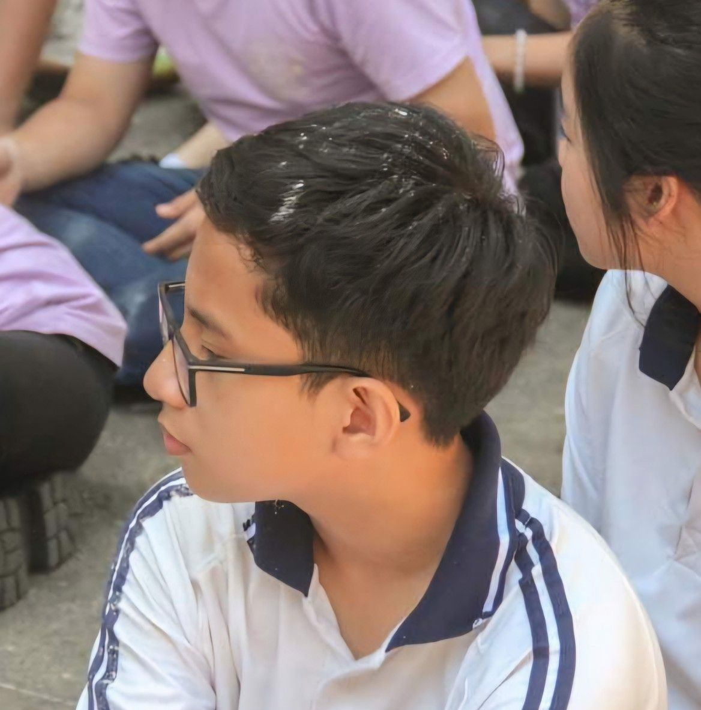

Math student · AI researcher · Builder
Studying Math at PTNK. I turn math into working software, from speech models to health-tech apps.
I want to build technology that helps people: in clinics, in classrooms, and in our communities.

I'm currently studying as a Math major at VNU-HCM High School for the Gifted (PTNK), aiming for a career in Computer Science and Artificial Intelligence.
I do research in speech AI and forecasting, build products (a clinic management system, an exam-prep platform), and host a podcast about tech, study stress, and healthcare. I also lead and volunteer: HR at MARs, charity drives in Huế, and teaching at a children's shelter.
Football, badminton, and running keep me balanced.
Previously at Trần Đại Nghĩa High School for the Gifted (2020 – 2024).
Hong Kong International Mathematical Olympiad.
Hong Kong International Mathematical Olympiad.
Recognized for an AI project on environmental sustainability.
Awarded Distinction in the AMC math contest.
Scored 3 or higher on 3+ AP exams.
Vietnam Titan Math Olympiad.
Tested whether teacher-student objectives and Gaussian KL help short, noisy Vietnamese speaker verification, across 27 duration-noise conditions.
Distilled a 0.6B-parameter Vietnamese ASR model into a 5M-parameter streaming wake-word detector.
Real-time air quality monitoring plus a Stacked Deep LSTM that forecasts AQI 3 hours ahead, shown on a ReactJS dashboard with health warnings. Also presented as the "AI-R Quality" poster.
E-submission system for a multi-branch logistics company, using finite state machines, parallel "AND-Join" synchronization, and attribute-based access control.
Digitizes clinic administration and the patient experience.
Exam-prep platform for V-ACT, HSA and TSA with 30+ full mock exams and 4,000+ questions.
Predicts how a CPI release moves the S&P 500 and turns it into an educational stock/bond allocation signal for first-time investors.
A site that curates video games with summaries and visual showcases.
Dozens of data structure and algorithm problems solved in Python.
Join a Gen Z high schooler exploring how tech intersects with study stress, mental health, and healthcare chaos. From late-night coding to building a real-world Clinic App, I discovered why we need 'Real Data' before 'AI'.
Helped prepare 1,000+ charity meals for a hospital with a team of 30+.
Taught English and Math to 40+ children and handed out 80+ snack packs as rewards.